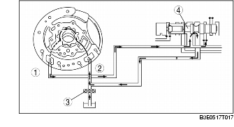

Oil pump operation
• When the inner rotor in the oil pump rotates, the ATF is drawn to the oil pump and then discharged from the oil pump. The discharge amount is proportional to the rotating speed of the torque converter. The ATF discharge amount is controlled by the pressure regulator valve and the pressure control solenoid.
